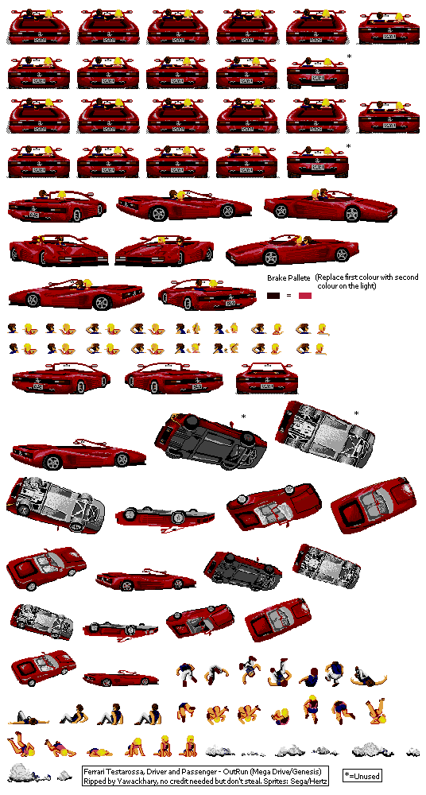
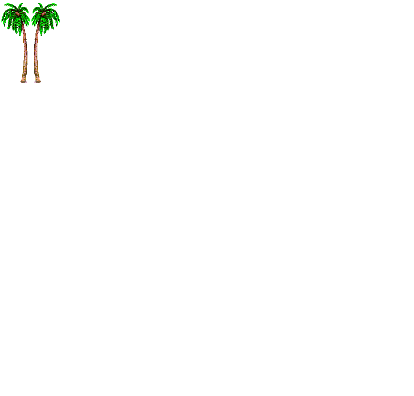
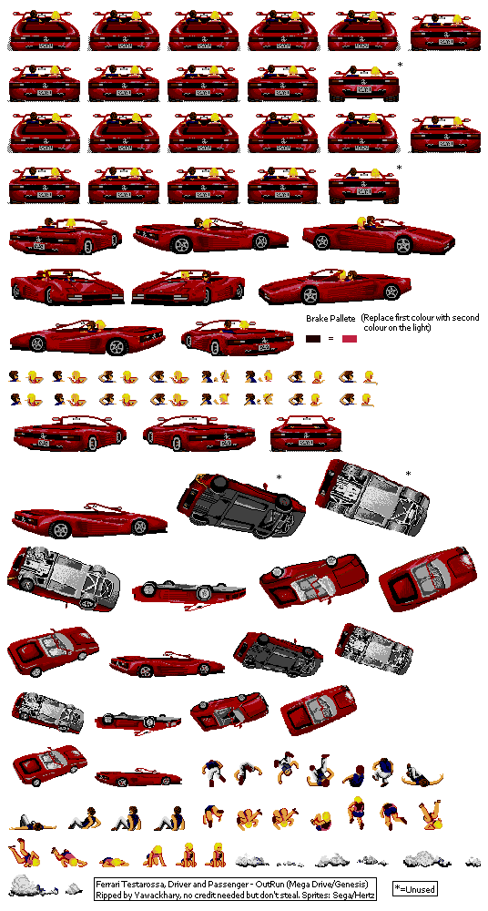
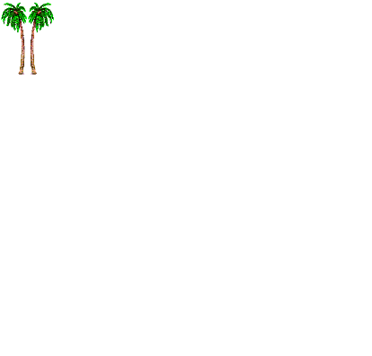

Press A to accelerate, Z to break.
Press <, and .> to turn
|||||||||||||||||||||||)>>>>>>>>>>>>>>>>>>>>>>>>)|(((((|||||||||||||||||||||))))))))))))))))))||||||||||||||||||||||||||||||(((((((((((((((((((((((((()))))))))))))))))))))))))))))|||||||||||||||(((((((((((((||||||||||||||||||||||||||||||||||||||||||||||||||||||||||||||||||||||||||||||||||||||||||||||||||||||||||||||||||||||||||||||||||||||||||||||||||||||||||||||||||||||||||||||||||||||||||||||||||||||||(((((((((((((((((((((((((((((((((((((((((((((((>>>>>>>>>>>>>>>>>>>>>>>>>>>>>>>>>>>>>>>>>>><<<<<<<<<<<<<<<<<<<<

 


